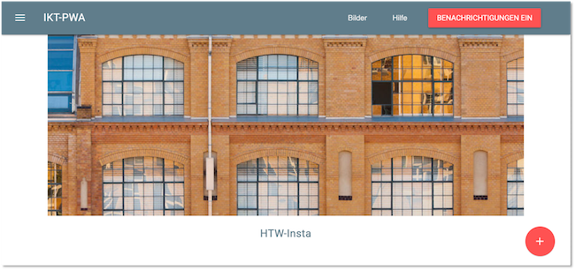
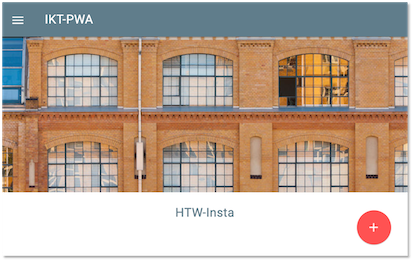

Grundgerüst unserer PWA¶
Wir beginnen jetzt mit der Implementierung von progressive Funktionalitäten. Das machen wir, indem wir sukzessive eine Progressive Web app erstellen, die viele der derzeit verfügbaren Funktionalitäten enthält, die derzeit für Progressive Web Apps verfügbar sind. Das Grundgerüst (oder der Ausgangspunkt) unserer PWA wird deshalb zur Verfügung gestellt, weil wir uns nicht um die Implementierung von HTML, CSS und JavaScript, sondern nur um die progressive Funktionalitäten kümmern wollen. Auf Basis dieses Grundgerüstes werden sukzessive Funktionalitäten, wie Push-Notifikationen, Offline-Verwendung, Geolocation, Kameranutzung usw. hinzufügen. Die Idee ist, dass wir eine Art HTW-Instagram erstellen. ich habe Instagram aber noch nie genutzt, deshalb weiß ich nicht, ob wir dem "Original" nahe kommen werden. Wahrscheinlich nicht, aber dafür behalten wir unsere Daten auch bei uns.
Installation¶
Den Quellcode für das Grundgerüst finden Sie hier (GitHub). Clonen Sie sich das Projekt in einem Ordner Ihrer Wahl und folgen Sie dann der README.MD:
-
Zum Ausführen des Projektes wird Node.js verendet. Sie müssen es auf Ihren Rechner installieren.
-
In der Wahl Ihrer IDE sind Sie völlig frei. Empfehlungen finden Sie unter https://freiheit.f4.htw-berlin.de/ikt/tools/#integrated-development-environment-ide
-
Zum Starten des Projektes wechseln Sie im Terminal (Terminal Ihres Rechners oder das Terminal in der IDE) in den Projektordner (
cd IKT-PWA-01) und führen dortnpm installaus. Damit werden alle erforderlichen Abhängigkeiten installiert.
-
Nach erfolgreicher Installation der Abhängigkeiten, geben Sie
npm startein, um Ihr Projekt auszuführen. Klicken Sie danach auf localhost:8080 oder geben Sie die URL direkt in Ihren Browser ein.
-
Sollten Sie Änderungen an der Implementierung vornehmen und diese ausprobieren wollen, müssen Sie den Server zunächst wieder stoppen:
Ctrl-Cund geben dann erneut
npm startein.
Starten¶
Starten Sie das Projekt mit npm start (nachdem Sie einmalig npm install ausgefürht haben) und öffnen Sie dann den Browser mit der URL http://localhost:8080/. Es erscheint

bzw. wenn Sie die Viewport-Breite verkleinern
.
Sie erkennen wahrscheinlich schon, dass wir Material Design Lite verwenden. Die Navigationskomponente kennen wir auch schon aus WebTech. Wenn Sie auf den +-Button klicken, erscheint ein kleines Menü. Dort können Sie zwar schon etwas eintragen, aber der SPEICHERN-Button funktioniert noch nicht. Auch beim BENACHRICHTIGUNGEN EIN-Button ist noch keine Ereignisbehandlung hinterlegt. Wenn Sie im Menü Hilfeklicken, öffnet sich die (fast leere) Hilfe-Seite.
Schalten Sie beim Betrachten der Anwendung stets die DeveloperTools ein. Sie können dort sehr leicht auf die mobile Ansicht wechseln. Wichtig ist, dass Sie - zum besseren Ausprobieren der Anwendung - in den DeveloperTools unter dem Reiter Network ein Häkchen bei Disable Cache setzen. Wir wollen in Zukunft das Caching unseren Service workern überlassen und nicht den Cache des Browsers verwenden.

Projekt¶
Bevor wir loslegen, werfen wir noch einen kurzen Blick auf die bisherigen Dateien im Projekt. Wir beginnen mit der index.html aus dem public-Ordner.
1 2 3 4 5 6 7 8 9 10 11 12 13 14 15 16 17 18 19 20 21 22 23 24 25 26 27 28 29 30 31 32 33 34 35 36 37 38 39 40 41 42 43 44 45 46 47 48 49 50 51 52 53 54 55 56 57 58 59 60 61 62 63 64 65 66 67 68 69 70 71 72 73 74 75 76 77 78 79 80 81 82 83 84 85 86 87 88 89 90 91 92 93 94 95 96 97 98 99 | |
Sie sieht recht umfangreich aus. tatsächlich ist aber das meiste darin für das Navigationstemplate. Die Zeilen 21-36 und 38-49 beschreiben das gleiche, nämlich die Navigationsleiste. Der obere Block ist für breite Viewports (Klasse mdl-layout--large-screen-only). Alle mdl-Klassen sind von Material. Einen guten Überblick über die einzelnen Material-Komponenten finden Sie hier. Näheres zu den Navigationen finden Sie darin z.B. hier. Dann kommt das Bild (Zeilen 75-77), dann der Text HTW Insta (Zeilen 78-81) und dann der +-Button (Zeilen 82-87). In den Zeilen 88-91 ist bereits eine Bestätigungsnachricht hinterlegt, derzeit aber noch hidden.
In den eingeundenen eigenen Stylesheets app.css und feed.css steht nicht viel:
1 2 3 4 5 6 7 | |
1 2 3 4 5 6 7 8 9 10 11 12 13 14 15 16 17 18 19 20 21 22 23 24 25 26 27 28 29 30 31 | |
Kurze Erinnerung an CSS: Punktselektoren beschreiben Klassen (z.B. .input-selection) und #-Selektoren beschreiben Ids (z.B. #create-post). Sie können die Anwendung der Klassen und der Ids ja mal in der index.html suchen, wenn Sie möchten.
Die public/help/index.html enthält noch weniger als die public/index.html. Erwähnenswert ist hier, dass wir mit einem Framework wie z.B. Angular natürlich der Navigation eine eigenen Komponente spendiert und diese nicht in beiden Dateien wiederholt hätten.
1 2 3 4 5 6 7 8 9 10 11 12 13 14 15 16 17 18 19 20 21 22 23 24 25 26 27 28 29 30 31 32 33 34 35 36 37 38 39 40 41 42 43 44 45 46 47 48 49 50 51 52 53 54 55 56 57 58 59 60 61 62 63 64 65 66 67 68 69 70 71 72 73 74 75 76 77 78 79 | |
Von den beiden JavaScript-Dateien public/src/js/app.js und public/src/js/feed.js steht derzeit nur etwas in der feed.js. Das schauen wir uns aber erst dann an, wenn wir neue Bildeinträge speichern wollen.